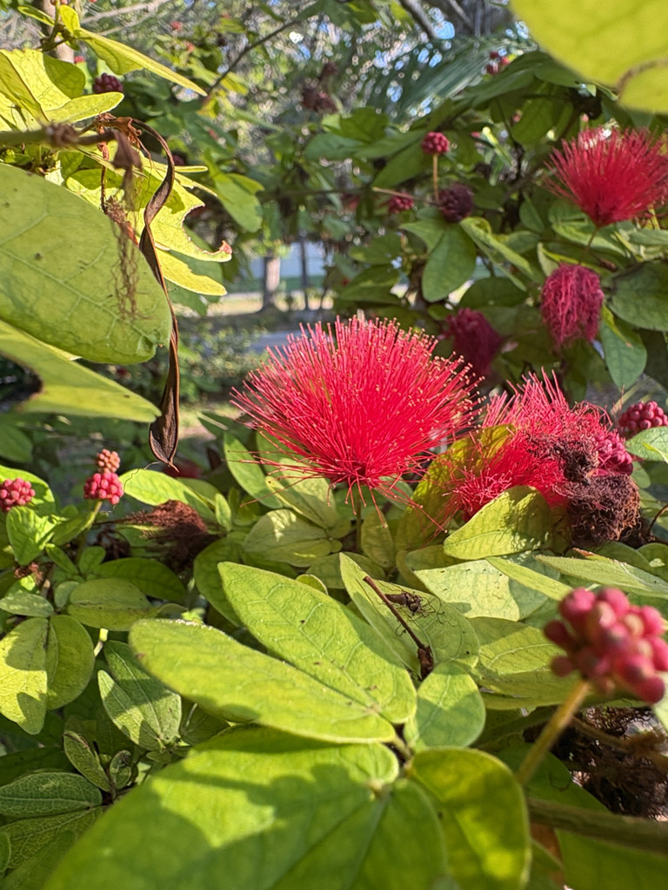

- The flowers look exactly like their name: soft, rounded, pink powder-puff heads made up of dozens of long, delicate stamens. There are no petals to speak of — the stamens are the show.
- A member of the legume family (Fabaceae) — a relative of the Royal Poinciana, Candelabra Bush, and other park legumes — but the flower structure is quite different from typical legume blooms.
- Grows as a compact shrub. Blooms nearly year-round in Florida. A reliable low-maintenance flowering shrub with no significant pest or disease problems.
- The genus Calliandra includes about 200 species, mostly in tropical America.
- The leaves practice nyctinasty — as the sun goes down, the paired leaflets fold together to sleep for the night, reopening at dawn. Worth watching near dusk.
- Grows on Welcome Island, largely on its own schedule. Visitors walk past regularly without stopping. Get close to a bloom in flower and reconsider.
Non-native. Native to Belize and adjacent Central America. Member of Fabaceae — the legume family.
- The Powderpuff earns its name from its flowers, which have almost no petals to speak of - the show is made entirely of long, silky stamens bundled into round, fluffy pompoms, like a powder puff or a small burst of fireworks. Each opens for only a day or so, but a healthy plant produces them in a long succession through the warm months, often heaviest in the cooler dry season.
- The color comes from those massed stamens, and the structure is built for hummingbirds, which probe the centers and dust themselves with pollen; butterflies and bees work them too. Like other members of the pea family it is a legume, with feathery compound leaves that fold at night and in the heat of the day.
- It is a tidy, fast, free-flowering shrub, easy to keep in bounds with light pruning, and one of the more reliable hummingbird draws in the collection.
Hummingbirds are frequent visitors — the long-stamened flower structure is particularly accessible to hovering birds. Butterflies and bees also visit.
The dense, compact growth provides cover for small birds and invertebrates.
Rounded heads of numerous long pink stamens — no visible petals. Powder-puff appearance. Produced nearly year-round.
Bipinnate, with small leaflets, giving a fine-textured appearance.
Flat, legume-style, splitting explosively at maturity.
Compact evergreen shrub, 3 to 6 feet tall and wide.
The pink staminal powder-puff heads are unmistakable. The fine bipinnate foliage is the secondary marker.
This is an ornamental, not eaten, but it's harmless — non-toxic to people, dogs, and cats.
Grows on Welcome Island.


- © Randall Carter (CC-BY-NC), via iNaturalist